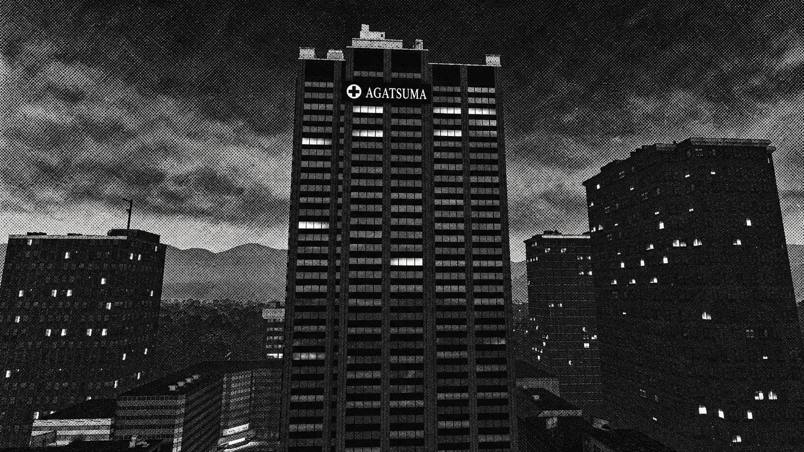

下北沢の我妻病院、
山田株式会社が正式買収
我妻会社が運営する「我妻病院」（東京都世田谷区下北沢）は20日、山田株式会社による株式取得が完了したと発表した。病院名と診療体制は維持し、地域に根差した医療を続ける。

AGATSUMAHOSPITAL
両社によると、取得は同日付。山田株式会社は医療分野で長い歴史を持つ老舗企業で、傘下には著名な山田病院を有する。今回の買収を通じて地域医療の基盤をさらに広げ、老朽化した設備の更新や電子カルテの刷新に、今後3年間で約18億円を投じる計画だ。
我妻病院は1919年の運営開始以来、救急外来と内科を中心に、下北沢周辺の住民を支えてきた。買収後も外来診療、入院病棟、夜間救急の受付時間に変更はないという。
「スタッフと患者さんの距離の近さを守りながら、次の世代の病院へ進化させる」
山田涼社長は記者会見でこう述べ、医師・看護師の雇用を維持する方針を強調した。我妻病院の我妻 樹里亜社長も「地域の安心を最優先に、丁寧な説明を続ける」としている。
世田谷区は、地域医療連携の枠組みを通じて両社の移行を支援する。新体制の診療案内は、10月1日から院内と公式ウェブサイトで順次公開される予定。